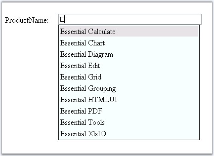

This topic will walk you through the procedure of providing your own data to the control with the help of ChoiceListEvent Handler.

Figure 33: AutoCompleteTextBox displaying the custom list using the server side event
The ProvideChoiceListOnCallBack event is used to provide user defined data to the control. Instead of using the data from the database, it's possible to provide your own data list. Data can be included as an arraylist or as XML data source.
1. Define the required statements in the ProvideChoiceListOnCallback event.
|
[C#]
protected void AutoCompleteTextBox2_ProvideChoiceListOnCallback(object sender, Syncfusion.Web.UI.WebControls.Tools.ACUserChoiceListEventArgs e) { ArrayList syncProductList = new ArrayList(); syncProductList.Add("Essential Tools"); syncProductList.Add("Essential Grid"); syncProductList.Add("Essential Grouping"); syncProductList.Add("Essential Calculate"); syncProductList.Add("Essential Edit"); syncProductList.Add("Essential PDF"); e.ChoiceList = syncProductList; } |
|
[VB]
Protected Sub AutoCompleteTextBox2_ProvideChoiceListOnCallback(ByVal sender As Object, ByVal e As Syncfusion.Web.UI.WebControls.Tools.ACUserChoiceListEventArgs) Dim syncProductList As ArrayList = New ArrayList() syncProductList.Add("Essential Tools") syncProductList.Add("Essential Grid") syncProductList.Add("Essential Grouping") syncProductList.Add("Essential Calculate") syncProductList.Add("Essential Edit") syncProductList.Add("Essential PDF") e.ChoiceList = syncProductList End Sub |
2. Build and run the application. The output of the provided list will be displayed.